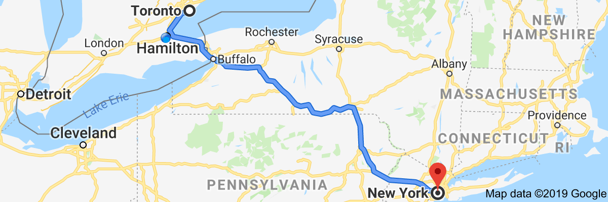
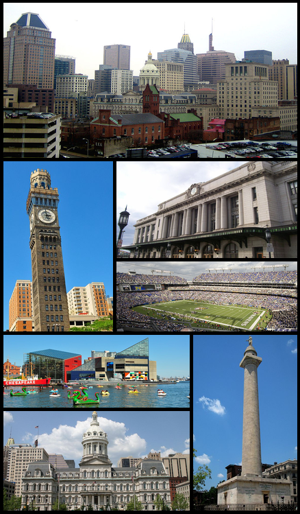
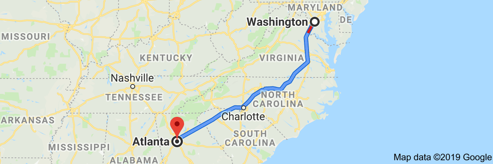
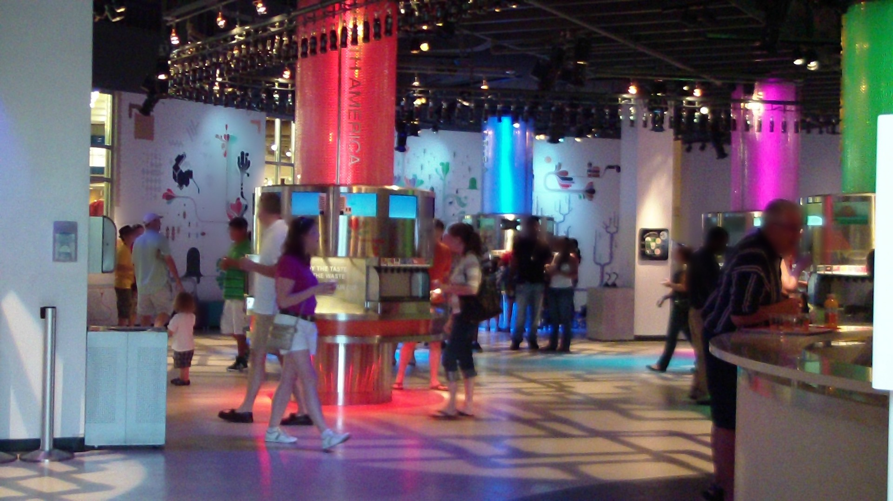
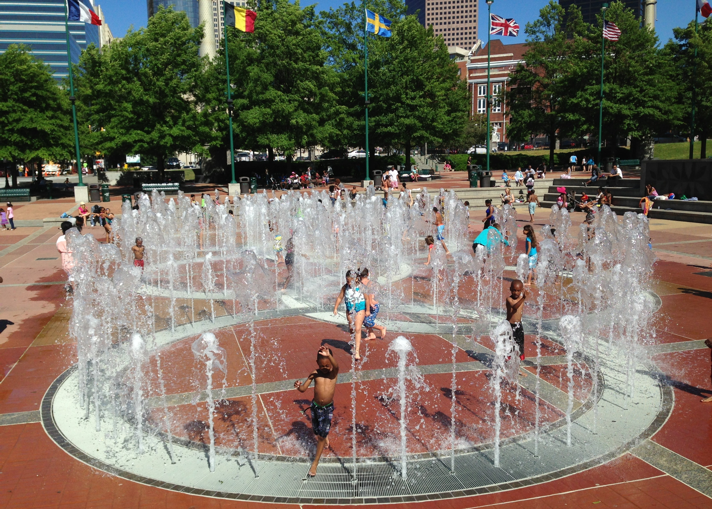
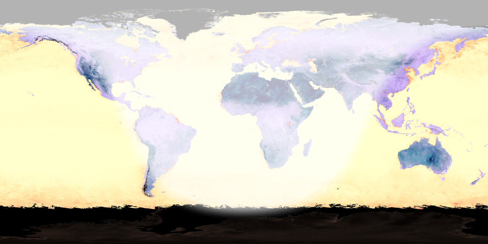

Reddit rankingman youtube channel
osm2pgrouting, overpass api - overpass ql,
gis stackexchange overpass-api tag,
text to speech - festival, espeak, pico2wave/svox,
desbma/GoogleSpeech, pndurette/gTTS,
mycroftai/mimic, firefox common voice tts,
hamilton parks and recreation
Loading json files into postgres rows
sql> \set content `cat /tmp/test.json`
sql> create temp table t ( j jsonb );
sql> insert into t values (:'content');
sql> select * from t;
Whatever the mind of man can concieve and believe,
it can achieve
TV Studios
Fire Side Chat
Late Night Comedy Variety Hour
News Caster Studio
Political Debate Stage
Soccer Stadium
Don't wait. The time will never be just right.
If you cannot do great things, do small things in
a great way.
Trip 2019
Toronto to New York City

8 hours
470 miles
Tour of New York City
drive times square area
stop and walk at Dakota Building
(john lennon's home) at
Central Park West and 72nd Street
walk to Strawberry Fields / Imagine Mosaic
walk to view luxury condominiums
(home of many celebrities)
drive by Central Park Zoo
drive by The Plaza hotel
drive by Carnegie Hall
drive around Rockefeller Center block
drive by St Patrick's Cathedral
drive by Rockefeller Center ice skating rink
drive by Rockefeller Center christmas tree
drive by Rockefeller NBC Today Show set
drive by Madison Square Park
drive by Flatiron Building
drive by Met-Life Building
drive by Empire State Building
drive by Greenwich Village
drive by Soho
drive by Chinatown
drive by Financial District
drive by New York Stock Exchange (on Wall Street)
drive by Federal Hall
drive by Trinity Church
drive by Charging Bull sculpture (on Broadway)
stop / walk at 9/11 Memorial
(at World Trade Center site)
walk grounds of Memorial
walk waterfalls of "Reflecting Absence"
(footprints of the twin towers)
walk by Survivor Tree
drive by Pier 15 (maybe get on a boat cruise)
drive view manhattan
brooklyn skyline
drive view Brooklyn Bridge
drive view Manhattan Bridge
drive view Williamsburg Bridge
drive view Ellis Island
drive view State of Liberty
Maybe take ferry ride to Ellis Island
/ Statue of Liberty
New York City to Washington, DC
4 hours
230 miles
Philedelphia, Pennsylvania
Baltimore, Maryland

Tour of Washington, DC
Parking at Hains /
East Potomac Park (lots A, B, C)
walk to Thomas Jefferson Memorial (toilets)
walk to George Mason Memorial
walk to FDR Memorial (toilets)
walk to Martin Luther King, Jr Memorial (toilets)
walk to DC War Memorial (toilets)
walk to Korean War Veterans Memorial
walk to Lincoln Memorial (toilets)
walk to Einstein Memorial
walk to Vietnam Veterans Memorial (toilets)
walk to 56 Signers of Declaration of Independence Memorial
walk to Constitution Gardens
walk to World War II Memorial
walk to DC War Memorial (toilets)
walk to Washington Monument (toilets)
walk around Ellipse (toilets)
view White House from Ellipse
walk to White House Visitor Center
walk to National Aquarium
walk to African American History Museum
TOUR African American History Museum
(IF HAVE TICKET)
walk to American History Museum
TOUR American History Museum
walk to Natural History Museum
TOUR Natural History Museum
walk to National Gallery Sculture Garden
walk to National Gallery West Building
TOUR National Gallery West Building
walk to National Gallery East Building
walk to Union Square
walk to Capitol Reflecting Pool
walk to Ulysses S. Grant Memorial
walk to U.S. Capitol Visitor Center
TOUR Capitol Visitor Center
walk to west steps of U.S. Capitol
walk to U.S. Botanic Garden
walk to American Indian Museum
walk to Air and Space Museum
TOUR Air and Space Museum
walk to Hirshhorn Museum
walk to Arts and Industries
walk to Smithsonian Castle
TOUR Smithsonsian Castle
walk to USDA Forest Service
walk to U.S. Holocaust Memorial Museum
walk to Bureau of Engineering and Printing
Walk back to Parking
Air And Space Museum (priotiy 1)
kitty hawk flyer
apollo 11 command module
charles lindbergh Spirit of St Louis
moon rock you can touch
American History Museum (priority 2)
collection of gowns from First Ladies
Julia Child's kitchen
one of the Muppets
the actual Star Spangled Banner
Natural History Museum (priority 3)
dinosaur at main fossil exhibity
ancient mummies
white rhino shot by Teddy Roosevelt
Hope Diamond
National Museum of African American
History and Culture (priority 4)
slavery exhibit
underground railroad exhibit
Jim Crow Era exhibity
black american accomplishment exhibit
segragation exhibit
pop culture exhibit
Washington, DC to Atlanta

10.5 hours
640 miles
Richmod, Virginia
Charlotte, North Carolina
Tour of Atlanta
World of Coca Cola

Centennial Olympic Park

Atlanta to Toronto
15 hours
1000 miles
A goal is a dream with a deadline
The starting point of all achievement is
desire.

Strength and growth come only through continuous
effort and struggle
Every adversity, every failure, and every
heartache, comes with it the Seed of an equivalent
or greater Benefit.
Patience, persistence, and perspiration make an
unbeatable combination for success.
Desire is the starting point of all achievement,
not a hope, not a wish, but a keen pulsating desire
which transcends everything.
Cherish your visions and your dreams as they are
the children of your soul, the blueprints of your
ultimate achievements.